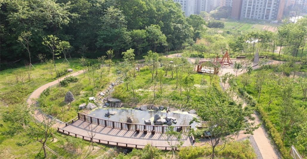
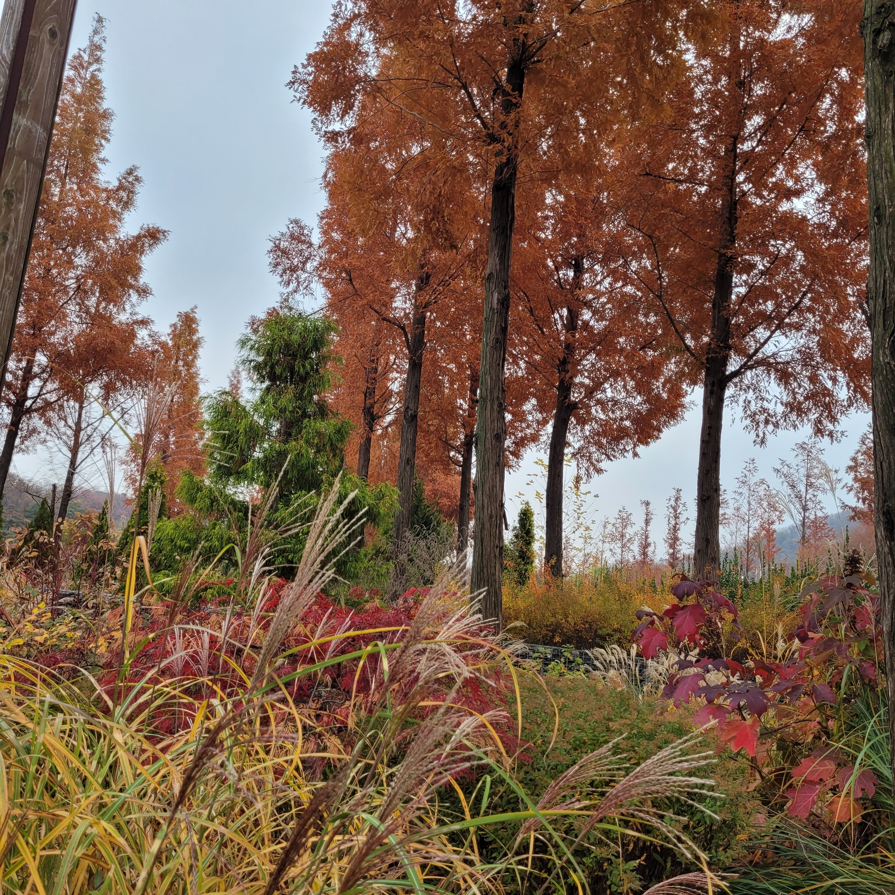
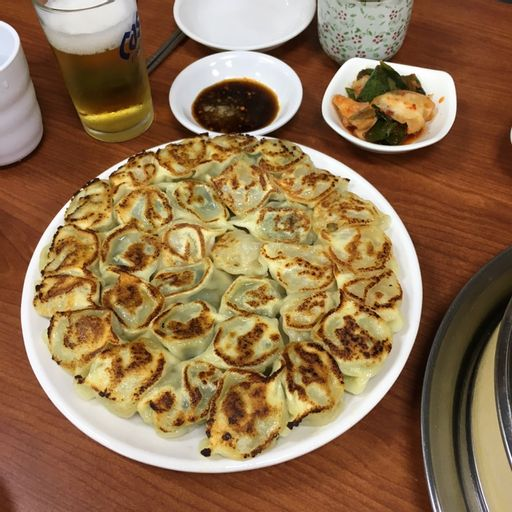
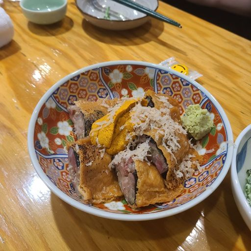
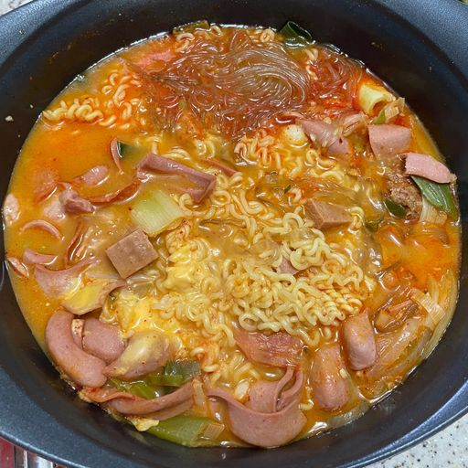

천왕근린공원서울특별시 구로구 천왕동에 위치한 근린공원 여름에는 저류지에 한가득 핀 연꽃을 감상할 수 있으며, 7~8월에는 서울특별시 공공서비스예약 홈페이지에서 캠핑장 평상 예약도 받고 있다. 평점 - |
 |
서울푸른수목원서울특별시 구로구 항동에 위치한 서울푸른수목원은 서울시 최초로 조성된 시립수목원으로, 교육프로그램과 친환경관리의 중심인 생태의섬(Eco-Island)이다. 푸른뜨락, 내음두루, 한울터, 돌티나라 등 2,100여종의 다양한 식물과 25개 테마원을 감상할 수 있고 작은도서관(북카페)와 숲교육센터 등 교육컨텐츠의 활용을 통해 가드닝프로그램(Gardening Program)과 생태학습의 장을 제공하고 있다. 평점 4.32/5 |
 |
월래순교자관서울특별시 구로구 디지털로19길 12 추천메뉴 : 군만두 평점 4.4/5 |
 |
라꾸긴서울특별시 구로구 가마산로 268 추천메뉴 : 금태구이 평점 4.4/5 |
 |
낭만부대찌개서울특별시 구로구 디지털로 288 대륭포스트타워 B1 104호 추천메뉴 : 부대찌개 평점 4.2/5 |
 |